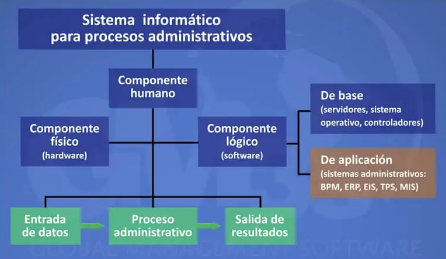

La planeación exige buscar y seleccionar, entre diversas alternativas, los cursos de acciones necesarios para alcanzar un objetivo. La planeación puede ser útil y debe comenzar sólo cuando los objetivos hayan sido escogidos correctamente. No puede efectuarse el plan maestro a menos que los objetivos globales estén bien detallados y se conozcan bien.
Todo sistema administrativo determina una serie de procedimientos que deben ser respetados por los miembros de una compañía a la hora de tomar decisiones. Esta compleja red se encuentra integrada en la estructura misma de la empresa y permite que cada paso que dé cualquiera de sus integrantes apunte hacia los mismos fines.
En el manual de un sistema administrativo deben figurar las responsabilidades y los roles que corresponden a cada puesto dentro de la organización y a cada unidad administrativa. Es importante resaltar que la existencia de un sistema como éste beneficia ampliamente el funcionamiento de una compañía, y facilita considerablemente tareas tales como las auditorías, así como el control del trabajo de cada empleado.
